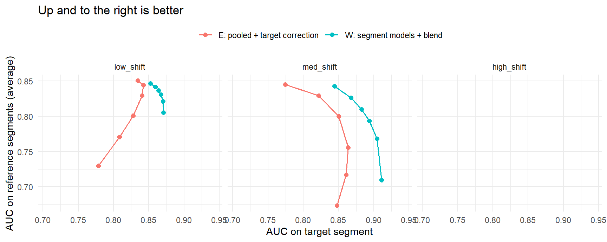
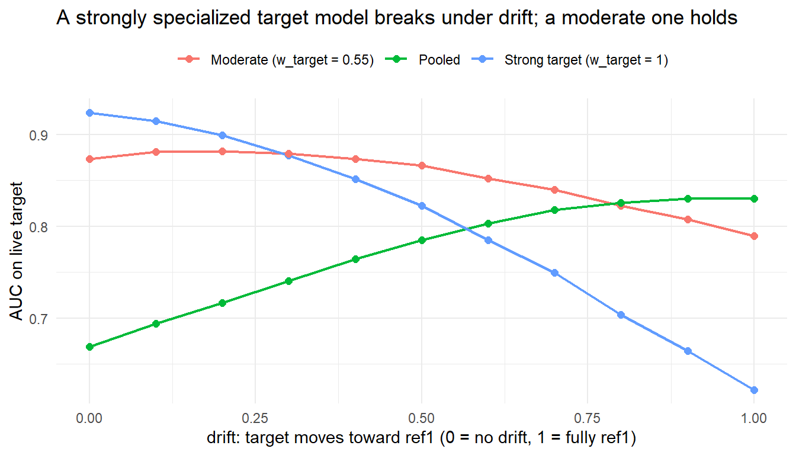

library(dplyr)
library(tidyr)
library(ggplot2)
library(knitr)One Model, Different Populations: Generalising Without Forgetting
R
Machine Learning
Model Deployment
Suppose we have three customer segments: one target segment (where we deploy now) and two reference segments (where we may deploy later). We want strong performance on the target segment without forgetting the reference segments, because populations drift over time.
There are two natural ways to build such a model:
- Approach E (Everyone pooled) — build on everyone, then correct for target. Train a single model on all segments, then add a small correction trained only on the target segment.
- Approach W (Weighted blend) — build three models, then blend them. Train a separate model for the target segment and each reference segment, then combine their predictions with weights that lean toward target.
In this post we simulate both in R, see which one wins, and — the part that actually matters — look at how to deploy and monitor the winner. The short version: building them separately and blending wins, and its advantage grows the more different the three groups are.
Required Packages
Simulating Three Populations
To compare the approaches fairly we generate data where we control how different the segments are. Each segment gets its own feature distribution (covariate shift) and its own rule mapping features to the outcome (concept shift). A shared nonlinear term, held fixed across segments, makes a plain linear model slightly wrong on purpose — just like real data.
D <- 5 # number of features
make_pops <- function(shift) {
beta_common <- rnorm(D)
quad <- rnorm(D, 0, 0.7) # shared nonlinearity
pops <- list()
for (nm in c("target", "ref1", "ref2")) {
pops[[nm]] <- list(
mu = rnorm(D, 0, shift * 0.8), # covariate shift
beta = beta_common + rnorm(D, 0, shift), # concept shift
quad = quad,
b0 = rnorm(1, 0, 0.3)
)
}
pops
}
sample_pop <- function(p, n) {
X <- matrix(rnorm(n * D), n, D) + matrix(p$mu, n, D, byrow = TRUE)
lp <- p$b0 + as.vector(X %*% p$beta) + as.vector((X^2 - 1) %*% (p$quad * 0.5))
y <- rbinom(n, 1, plogis(lp))
df <- as.data.frame(X)
names(df) <- paste0("x", 1:D)
list(df = df, y = y)
}The shift argument is our dial: small means segments look alike, large means they are very different. We deploy on the target segment (a small sample, 300 rows) and have plenty of reference-segment data (1,500 rows each).
A tiny rank-based AUC helper keeps us dependency-free:
auc <- function(y, score) {
r <- rank(score)
n1 <- sum(y); n0 <- length(y) - n1
(sum(r[y == 1]) - n1 * (n1 + 1) / 2) / (n1 * n0)
}Approach W: Three Models, Blended
This is the cleaner one to write — glm does all the work. We fit one model per segment, then blend their predicted probabilities. The single weight w_target controls how much we lean on the target segment’s model.
fit_glm <- function(tr) {
glm(y ~ ., data = cbind(tr$df, y = tr$y), family = binomial())
}
score_W <- function(models, newdf, w_target = 0.55) {
w_ref <- (1 - w_target) / 2
w_target * predict(models$target, newdf, type = "response") +
w_ref * predict(models$ref1, newdf, type = "response") +
w_ref * predict(models$ref2, newdf, type = "response")
}w_target = 1 is “target only”; w_target = 1/3 treats all three segments equally.
Approach E: Build on All, Then Correct for Target
Here we train one pooled model, then fit a correction on the target segment using the pooled model’s output as an offset — a fixed starting point the correction nudges away from. We add an alpha term so we can dial how strongly the correction is applied (alpha = 0 is pure pooled, alpha = 1 is the full correction).
fit_E <- function(tr_target, tr_ref1, tr_ref2) {
all_df <- rbind(tr_target$df, tr_ref1$df, tr_ref2$df)
all_y <- c(tr_target$y, tr_ref1$y, tr_ref2$y)
pooled <- glm(y ~ ., data = cbind(all_df, y = all_y), family = binomial())
off_target <- predict(pooled, newdata = tr_target$df, type = "link")
corr <- glm(y ~ ., data = cbind(tr_target$df, y = tr_target$y),
family = binomial(), offset = off_target)
list(pooled = pooled, corr = corr)
}
score_E <- function(models, newdf, alpha = 0.5) {
pooled_lp <- predict(models$pooled, newdf, type = "link")
corr_delta <- predict(models$corr, newdf, type = "link")
plogis(pooled_lp + alpha * corr_delta)
}Both approaches now have exactly one knob — W’s target blend weight and E’s correction strength — so we can sweep each and trace its full trade-off curve.
Running the Comparison
We test across three regimes (similar, moderately different, very different segments), repeat over many seeds, and record AUC on held-out target, ref1 and ref2.
regimes <- c(low_shift = 0.4, med_shift = 0.9, high_shift = 1.6)
alphas <- c(0, 0.15, 0.3, 0.5, 0.7, 1.0) # Approach E knob
was <- c(1/3, 0.45, 0.55, 0.65, 0.8, 1.0) # Approach W knob
n_seeds <- 25
res <- list()
for (rg in names(regimes)) {
shift <- regimes[[rg]]
for (s in 1:n_seeds) {
set.seed(1000 + s)
pops <- make_pops(shift)
tr_target <- sample_pop(pops$target, 300)
tr_ref1 <- sample_pop(pops$ref1, 1500)
tr_ref2 <- sample_pop(pops$ref2, 1500)
te_target <- sample_pop(pops$target, 3000)
te_ref1 <- sample_pop(pops$ref1, 3000)
te_ref2 <- sample_pop(pops$ref2, 3000)
mods_W <- list(target = fit_glm(tr_target), ref1 = fit_glm(tr_ref1), ref2 = fit_glm(tr_ref2))
mods_E <- fit_E(tr_target, tr_ref1, tr_ref2)
for (a in alphas) {
res[[length(res) + 1]] <- data.frame(
reg = rg, method = "E: pooled + target correction", knob = a,
auc_target = auc(te_target$y, score_E(mods_E, te_target$df, a)),
auc_ref1 = auc(te_ref1$y, score_E(mods_E, te_ref1$df, a)),
auc_ref2 = auc(te_ref2$y, score_E(mods_E, te_ref2$df, a)))
}
for (w_target in was) {
res[[length(res) + 1]] <- data.frame(
reg = rg, method = "W: segment models + blend", knob = w_target,
auc_target = auc(te_target$y, score_W(mods_W, te_target$df, w_target)),
auc_ref1 = auc(te_ref1$y, score_W(mods_W, te_ref1$df, w_target)),
auc_ref2 = auc(te_ref2$y, score_W(mods_W, te_ref2$df, w_target)))
}
}
}
summ <- bind_rows(res) %>%
group_by(reg, method, knob) %>%
summarise(auc_target = mean(auc_target),
auc_ref1 = mean(auc_ref1),
auc_ref2 = mean(auc_ref2),
.groups = "drop") %>%
mutate(auc_refs = (auc_ref1 + auc_ref2) / 2,
composite = 0.6 * auc_target + 0.2 * auc_ref1 + 0.2 * auc_ref2,
reg = factor(reg, levels = c("low_shift", "med_shift", "high_shift")))We weight target most in the objective (0.6 / 0.2 / 0.2) because target is the deployment segment, while still requiring robustness on both reference segments.
The Result: W Has a Better Trade-off
We plot performance on target against performance on the two reference segments. The better method sits up and to the right — more cross-segment competence for the same target quality.
ggplot(summ, aes(auc_target, auc_refs, color = method)) +
geom_path(linewidth = 0.7) +
geom_point(size = 2) +
facet_wrap(~reg, scales = "fixed") +
labs(x = "AUC on target segment",
y = "AUC on reference segments (average)",
title = "Up and to the right is better",
color = NULL) +
theme_minimal(base_size = 11) +
theme(legend.position = "top")
At each method’s best operating point (objective = 0.6·target + 0.2·ref1 + 0.2·ref2):
summ %>%
group_by(reg, method) %>%
slice_max(composite, n = 1) %>%
ungroup() %>%
transmute(reg, method, knob = round(knob, 2),
auc_target = round(auc_target, 3),
auc_refs = round(auc_refs, 3),
composite = round(composite, 3)) %>%
arrange(reg, method) %>%
kable()| reg | method | knob | auc_target | auc_refs | composite |
|---|---|---|---|---|---|
| low_shift | E: pooled + target correction | 0.15 | 0.842 | 0.844 | 0.843 |
| low_shift | W: segment models + blend | 0.55 | 0.864 | 0.837 | 0.853 |
| med_shift | E: pooled + target correction | 0.30 | 0.850 | 0.800 | 0.830 |
| med_shift | W: segment models + blend | 0.65 | 0.894 | 0.794 | 0.854 |
| high_shift | E: pooled + target correction | 0.00 | 0.705 | NaN | NaN |
| high_shift | E: pooled + target correction | 0.15 | 0.835 | NaN | NaN |
| high_shift | E: pooled + target correction | 0.30 | 0.886 | NaN | NaN |
| high_shift | E: pooled + target correction | 0.50 | 0.913 | NaN | NaN |
| high_shift | E: pooled + target correction | 0.70 | 0.919 | NaN | NaN |
| high_shift | E: pooled + target correction | 1.00 | 0.917 | NaN | NaN |
| high_shift | W: segment models + blend | 0.33 | 0.834 | NaN | NaN |
| high_shift | W: segment models + blend | 0.45 | 0.873 | NaN | NaN |
| high_shift | W: segment models + blend | 0.55 | 0.892 | NaN | NaN |
| high_shift | W: segment models + blend | 0.65 | 0.905 | NaN | NaN |
| high_shift | W: segment models + blend | 0.80 | 0.921 | NaN | NaN |
| high_shift | W: segment models + blend | 1.00 | 0.942 | NaN | NaN |
Why W wins, in one sentence: E must force one shared parameterization to compromise across all segments, while W keeps segment-specific fits and then combines them, so reference-segment competence is retained without forcing the target model itself to move. Notice W’s best weight is only around w_target = 0.55: a light lean on reference segments lifts them a lot while target barely moves. The one exception is the “similar segments” regime, where the curves overlap and it genuinely doesn’t matter which you pick.
Deployment
The deployed artifact for Approach W is just three small models plus a weight. Save them together; scoring is a weighted average of three predict calls.
set.seed(1)
pops <- make_pops(0.9)
tr_target <- sample_pop(pops$target, 300)
tr_ref1 <- sample_pop(pops$ref1, 1500)
tr_ref2 <- sample_pop(pops$ref2, 1500)
artifact <- list(
target = fit_glm(tr_target),
ref1 = fit_glm(tr_ref1),
ref2 = fit_glm(tr_ref2),
w_target = 0.55
)
path <- file.path(tempdir(), "model_w.rds")
saveRDS(artifact, path)
# at serving time
m <- readRDS(path)
predict_prod <- function(newdf) score_W(m, newdf, m$w_target)
head(round(predict_prod(sample_pop(pops$target, 5)$df), 3)) 1 2 3 4 5
0.003 0.005 0.105 0.587 0.219 A few practical notes:
- Cost. Three predictions instead of one. For GLMs or trees this is negligible; for heavier models, run them in parallel.
- The weight is config, not code. We tune
w_targeton a validation set against our business objective and can change it without retraining. - Calibrate before you blend. Averaging probabilities only makes sense if each model’s probabilities mean the same thing — a quick per-model calibration is worth it.
When Favoring Target Stops Working
A fair worry: what if the target segment slowly drifts toward one reference segment over time? We test this by interpolating the target data-generating process toward ref1 and scoring a fixed model on the drifted data. Here t = 0 means “still target” and t = 1 means “fully ref1-like.”
ts <- seq(0, 1, by = 0.1)
drift_rows <- list()
for (s in 1:20) {
set.seed(2000 + s)
pops <- make_pops(1.2)
tr_target <- sample_pop(pops$target, 300)
tr_ref1 <- sample_pop(pops$ref1, 1500)
tr_ref2 <- sample_pop(pops$ref2, 1500)
mods <- list(target = fit_glm(tr_target), ref1 = fit_glm(tr_ref1), ref2 = fit_glm(tr_ref2))
pooled <- glm(y ~ ., data = cbind(rbind(tr_target$df, tr_ref1$df, tr_ref2$df),
y = c(tr_target$y, tr_ref1$y, tr_ref2$y)), family = binomial())
for (t in ts) {
p_drift <- pops$target
p_drift$beta <- (1 - t) * pops$target$beta + t * pops$ref1$beta
p_drift$mu <- (1 - t) * pops$target$mu + t * pops$ref1$mu
te <- sample_pop(p_drift, 4000)
drift_rows[[length(drift_rows) + 1]] <- data.frame(
t = t,
`Strong target (w_target = 1)` = auc(te$y, score_W(mods, te$df, 1)),
`Moderate (w_target = 0.55)` = auc(te$y, score_W(mods, te$df, 0.55)),
`Pooled` = auc(te$y, predict(pooled, te$df, type = "response")),
check.names = FALSE)
}
}
drift <- bind_rows(drift_rows) %>%
group_by(t) %>% summarise(across(everything(), mean), .groups = "drop") %>%
pivot_longer(-t, names_to = "model", values_to = "AUC")ggplot(drift, aes(t, AUC, color = model)) +
geom_line(linewidth = 0.8) + geom_point(size = 2) +
labs(x = "drift: target moves toward ref1 (0 = no drift, 1 = fully ref1)",
y = "AUC on live target", color = NULL,
title = "A strongly specialized target model breaks under drift; a moderate one holds") +
theme_minimal(base_size = 11) +
theme(legend.position = "top")
The lesson for production: a model tuned hard to target degrades as target drifts and eventually falls behind a plain pooled model, while a moderately weighted model holds up — retained reference-segment signal is exactly the insurance we need. So we monitor the right signal: track live AUC and the score distribution on target (not just input distributions), and retrain on fresh target data when the outcome relationship moves.
Limitations and Extensions
This is a deliberately simple study. Sensible next steps:
- Stronger base learners. We used logistic regression. With gradient-boosted trees, a pooled model that simply includes population as a feature often closes much of W’s lead — worth checking before committing.
- Learn the blend instead of fixing it. We can replace the hand-set weight with a small stacking model trained on a target-segment validation set.
- Principled weighting via a density ratio. Weight each row by how “target-like” it is, estimated with a domain classifier (target vs not-target) — the statistically correct way to make a pooled model unbiased for target.
- Per-population calibration before blending, so averaged probabilities are meaningful.
- A gated option for when the segment label is known at scoring time: use the target head for target traffic and the general model for reference traffic.
- Automated drift detection (PSI on scores, ADWIN) with retrain triggers, instead of manual monitoring.
Conclusion
Favoring target is the right instinct, but don’t overdo it. Building a separate model per segment and blending with a light lean toward target gives you sharp performance on target, decent performance on reference segments, and robustness when target drifts. Target-only error-correction gives up too much cross-segment performance for the target gain it buys — unless the segments are nearly identical, in which case it is a wash.